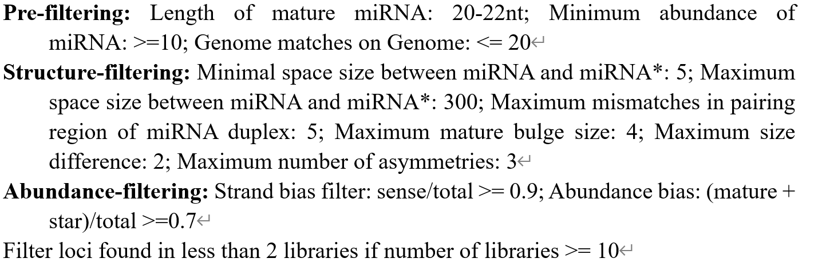

Manual Curation¶
This module provides the information for all miRNA candidates generated during the compilation and selection processes, and creates a summary page for rapid curation of the quality of selected miRNAs.
| Tools | Input | Output | Applications |
|---|---|---|---|
manualCuration |
Output from MiRNA Selection | Summary and report pages | Determine the quality of miRNAs |
manualCuration¶
Input¶
Selected miRNAs from miRNASelection: miRNA table from
miRNASelection, which includes classification results based on high-throughput (HT) criteria and/or machine learning (ML)-based approaches.Sample information: upload tissue information to iwa-miRNA server as following example (Arabidopsis:
sample_information.txt):Genome annotation file: Genome annotations will be used to label the source of miRNAs. We provided Arabidopsis data
genome_annotation.txtwith following format:Note:
- PCG - protein coding gene; ncRNA_gene: non-protein coding RNA gene; TE: Transposable element.
- lncRNA: long non-coding RNA; LTR: long terminal repeat; RC: Rolling-circle.
(Optional) Gene description file: Gene descriptions as following example (Arabidopsis:
gene_description.txt):
Note: If you are not clear about how to upload local data to iwa-miRNA server, please see Upload data to your local iwa-miRNA server for details.
Output¶
- The interactive annotation HTML of promising miRNA candidates: The summary and report pages containing information of miRNA precursors and mature miRNAs.
How to use this function¶
For selections, please see the following figure:

I) The summary and report pages containing the information of miRNA precursors and mature miRNAs will be returned (see the figure below). Users can make a further decision based on their knowledge through flexible operations, such as adjusting thresholds of filters, and selecting and deleting miRNA candidates. The complete preview of the results is available at Output in manualCuration.

Note: Users can update the list of selected miRNAs in a dynamic manner through adjusting criteria thresholds, or by direct deletion from the summary page. The meaning of each column in the file is as follows:
- ID: The modified name of miRNA precursors. miRNAs from databases remain their raw names and miRNAs from sRNA-Seq got a new name with species-MIR-N{number}{letter};
- HT criteria: The true/false means whether miRNAs meet the High-throughput (HT) criteria or not.
- One class SVM: miRNA categories defined according to the predictions of one-class Support Vector Machine (SVM) algorithm, which is trained using miRNAs in the positive dataset. “remained_positive”: miRNAs in the positive dataset are predicted as miRNAs. “removed_positive”: miRNAs in the positive dataset are not predicted as miRNAs. “novel_prediction”: miRNA candidates are predicted as miRNAs, and “others”: miRNA candidates are not predicted as miRNAs.
- Genomic source: Genomic sources of miRNAs.
- Source: “1”, “2”, “3”, “4” represent annotated miRNAs from miRBase, PmiREN, sRNAanno and Psgenes databases, respectively. “p” denotes miRNAs predicted by
miRNAPredictfunction in iwa-miRNA.- Stem loop: Loc, Len, MFE, AMFE - The location, length, minimum free energy (MFE), adjusted MFE of stem-loop sequence;
- Mature miRNA: Arm, Seq, Len, TPM - The arm, sequence (5’->3’), length, abundance of mature miRNAs;
- miRNA precursor: Seq count - Number of collapsed reads mapped to miRNA precursors; Abundance bias: The sum of the TPM of miRNA isoforms (isomiRs) was divided by the TPM of miRNA precursors; Strand bias - The sum of the TPM of sequences matching miRNA precursors was divided by that matching both strands; RNAfold - Whether miRNAs have an effective RNA structure predicted by RNAfold. The miRNA/miRNA* duplexes with up to five mismatched positions (including up to three nucleotides in asymmetric bulges) are considered to have an effective RNA structure; Centroidfold - Whether miRNAs have an effective RNA structure predicted by Centroidfold. The miRNA/miRNA* duplexes with up to five mismatched positions (including up to three nucleotides in asymmetric bulges) are considered to have an effective RNA structure;
- Expressed samples: Mean - The average TPM of one miRNA across all sRNA-Seq datasets; Max - The max TPM of one miRNA across all sRNA-Seq datasets; Samples (TPM>1) - The number of samples with TPM≥1.
II) Each miRNA has a report page that contains detailed information customized by feature types, making it easy to understand this miRNA during manual curation.

Note: A secondary structure plot is generated to display the location of a mature miRNA within the precursor sequence and quality-profiling results. Read stacks are plotted to show the read support of identified miRNAs. A boxplot is used to visualize miRNA expression patterns and arm selection events across different samples. A bipartite network is constructed to depict miRNA-target interactions predicted by psRNAtarget [1]. Users can quickly browse this miRNA and further decide which features make this miRNA candidate not actually a bona fide miRNA.
Additional information¶
Criteria for plant microRNA annotation:
Axtell MJ, Meyers BC. (2018) [2] Revisiting criteria for plant miRNA annotation in the era of big data.
-
sRNAanno [5]

| [1] | Dai X, Zhuang Z, Zhao PX. psRNATarget: a plant small RNA target analysis server (2017 release). Nucleic Acids Res 2018;46:W49-W54. |
| [2] | Axtell MJ, Meyers BC. Revisiting criteria for plant microRNA annotation in the era of big data. Plant Cell 2018;30:272-84. |
| [3] | Kuang Z, Wang Y, Li L, Yang X. miRDeep-P2: accurate and fast analysis of the microRNA transcriptome in plants. Bioinformatics 2019;35:2521-2. |
| [4] | Guo Z, Kuang Z, Wang Y, Zhao Y, Tao Y, Cheng C, et al. PmiREN: a comprehensive encyclopedia of plant miRNAs. Nucleic Acids Res 2020;48:D1114-D21. |
| [5] | Chen C, Feng J, Liu B, Li J, Feng L, Yu X, et al. sRNAanno — a database repository of uniformly-annotated small RNAs in plants. bioRxiv 2019:771121. |